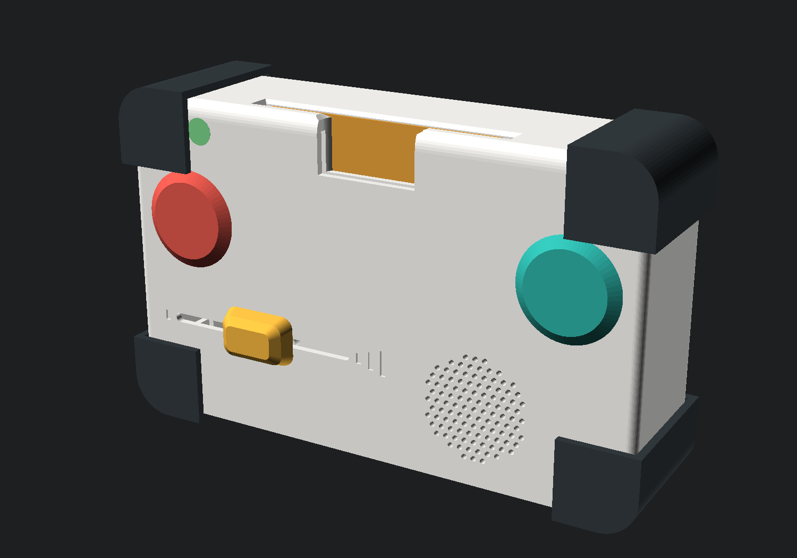
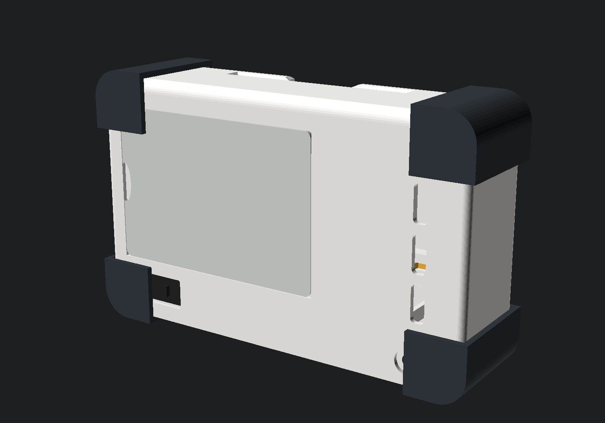
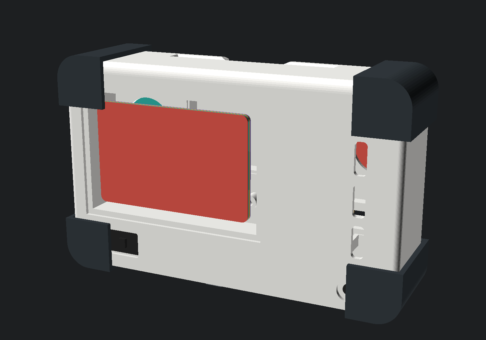

180 × 110 × 45 mm · corpo bianco · 5 pezzi stampati
La variante v2 di babybox, montata. La carta della storia si infila dal bordo superiore e sparisce dentro: si rivede dalla tacca sulla faccia, ed è di lì che si spinge fuori col pollice.


